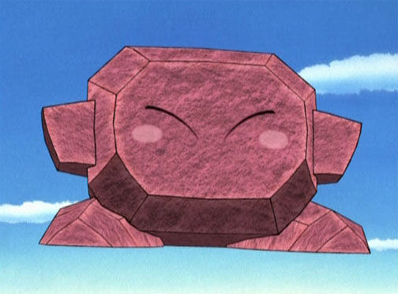

The Greatness of Kirby's Forms!
Stone Kirby is created when Kirby uses his copy ability and swallows a rock. From there, he is able to turn into a rock and deflect anything that comes his way. He can also turn into a rock at anytime meaning he can attack enemies while mid-air as he turns into a rock. It's actually insane dude. Like mid-air he goes BONK and drops down on his opponents. Actually feels bad dude. That is more toxic than Chernobyl just dropping down on your enemies. ESPECIALLY THE KING DEDEDE goons. They didn't ever sign up or BELIEVE there's a pink circle just eating things.
